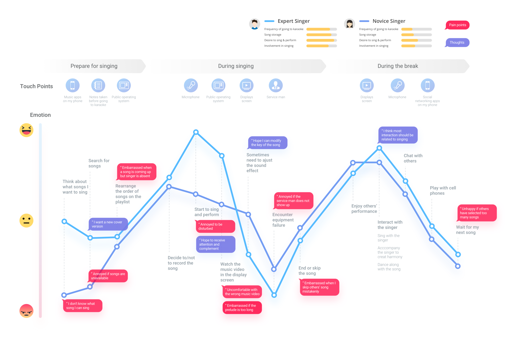
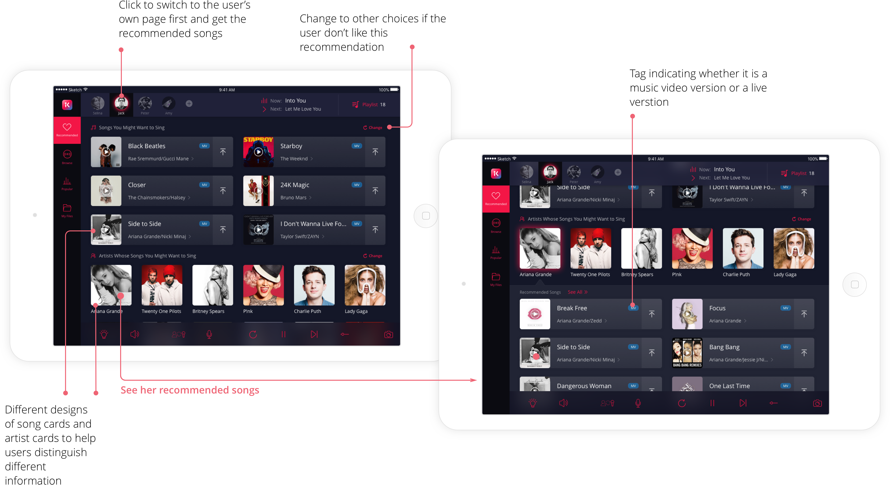
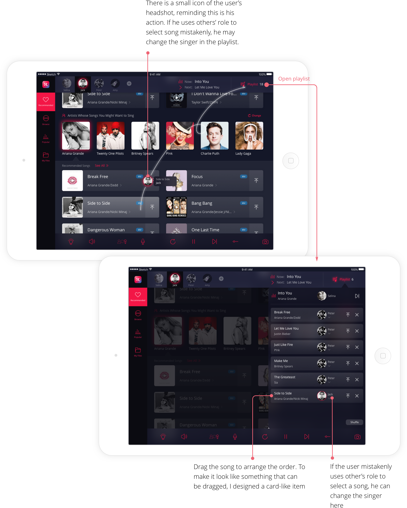
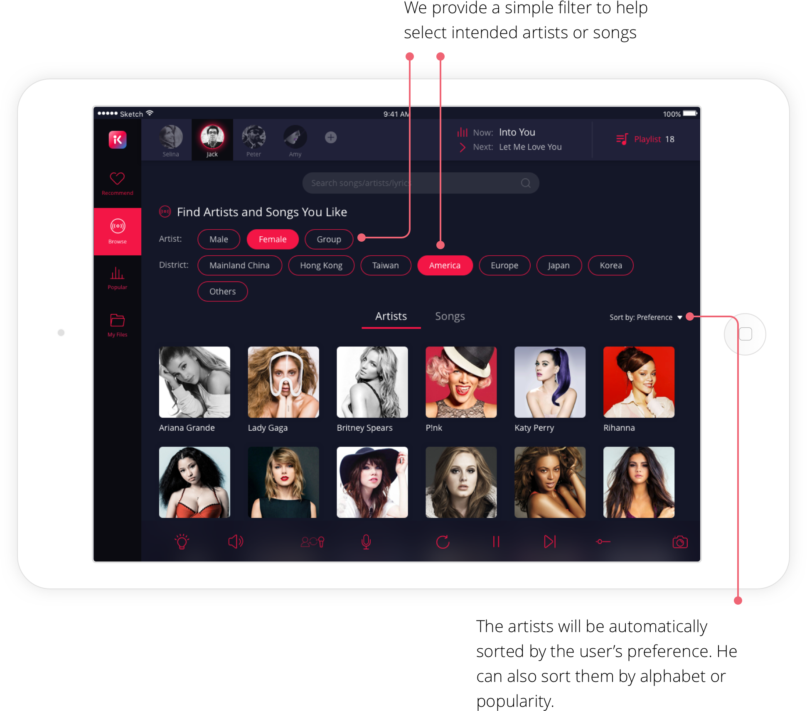
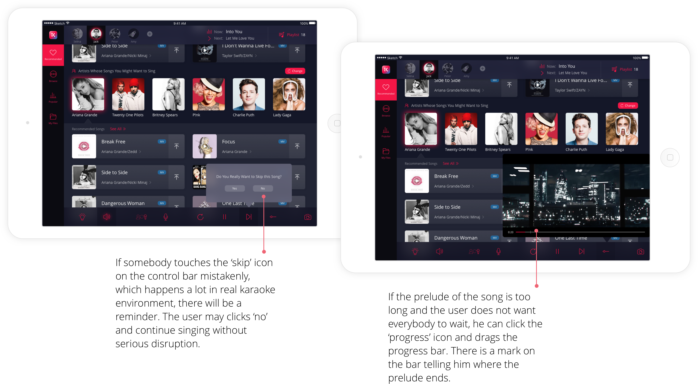

Going to karaoke is a main recreational way for many Chinese
young people. However, while digital products are booming nowadays,
karaoke bars’ system fall behind in user experience design. They
focus on interior design, foods and other services, but fail to
enhance singing-related experience. So over the years I have been
thinking how to use my design capacities to improve the singing
experience in karaoke room. And here comes the chance.
After desktop research, we conducted deeper research into users' current karaoke experience. We recruited people that fit in our target users group as interviewees and participants in field observations.
Based on our findings from interviews and field observation, I created a journey map to understand what people would do and how they felt in a typical singing process.

Find the right song with minimum effort
One of the important goals of the product is to help users to quickly find the songs they want instead of spending time thinking what to sing. After scanning the QR code with their phones and enter their own page, users can see recommendations and use other convenient features to find the right songs for them:

Selecting songs made just for you and getting ready to sing
After deciding what song to sing, users can add the song to the playlist. The playlist can be opened on the top right corner. The design of the selecting process also gives consideration for different users roles.

Browse to see what you can sing
Sometimes users' needs for songs is not that specific. Usually, they would go to the artist's library to browse for songs. Meanwhile, they also have preferences towards certain types of artists. Thus, we designed several ways to help them filter the content.

Easier control and fewer disruptions
Another important job of the system is to help provide a comfortable experience for singing. While singing experience depends highly on hardware like microphones and acoustics, the system should do its best to enhance the singing experience and avoid accidents. To achieve that goal, we designed a friendly control bar with multiple functions:

Thanks for reading!